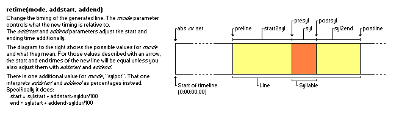

Aegisub / Automation / Karaoke Templater / Code execution environment
The Lua code in code blocks and on code lines is run in a separate global environment such that it won't accidentally disturb the main script function.
You can store your own data in this environment for use later, for example pre-compute some values on code-lines and later insert them using code blocks, but it also contains several pre-defined variables and functions designed to make it easier writing effect templates.
It's important to understand that the contents of code execution environment and the inline-variables ($-variables) are not related. You cannot change an inline-variable by changing something in the code execution environment nor can you add new ones. However, you can create and re-define the contents of the code execution environment.
Line and syllable information
The code execution environment contains a few variables pointing to the current line and syllable structure being processed, as well as some more supporting tables. These are just references to the structures produced by karaskel and are not modified in any way.
You should treat all of these except line as read-only. If you change the
other ones, the kara-templater script might start misbehaving.
- line - The line currently being produced. Changing this will affect the resulting line in the file. See the reference for dialogue line tables.
- orgline - The original line. This is the source line the current syllable is located on.
- syl - The current syllable structure. If the current template is a furi template, it's the current furigana syllable. If the current template has one or both of the char or multi modifiers, this is a pseudo-syllable structure, a copy of the original syllable structure with several values changed to look like the current part of the syllable being processed. Also see the reference for syllable tables.
- basesyl - Usually the same as
syl, except when the template has the char or multi modifier, then this is the original syllable. (Ifsyl == basesylis true, then the current template is neither char nor multi.) - meta - Contains various metadata about the script, namely the
contents of the Script Info section. Most importantly, it has the
res_xandres_yfields describing the script resolution.
All of these variables are reset to nil whenever processing starts for a
new line, except meta. They are then set to the relevant value whenever
processing hits a new stage. This means that, for example pre-line
templates only has line and orgline set and both syl and basesyl
are nil. In code once templates, all of the variables except meta are
nil.
Standard libraries and related things
Both the string and math Lua standard libraries are imported into the execution environment, as they are generally useful.
You can also access the main execution environment of the kara-templater
script itself using the _G (underscore capital-G) variable and
through that access the rest of the Lua standard library and any loaded
modules. For example, _G.table.sort refers to
the regular table.sort function. See the Lua 5.1
manual for details on the
available libraries.
For backwards compatibility, several of the included modules
(karaskel.lua,
unicode.lua and
utils.lua) are automatically loaded
and will be accessible via _G by default. All others must be explicitly
required on a code line.
There is also the self-reference tenv variable which refers to the
code execution environment itself. This means that tenv.tenv == tenv is
true.
Utility functions
These functions help do more complex modifications of the output line (the
line variable) and are unavoidable when creating complex effects.
retime
Synopsis: retime(mode, startadjust, endadjust)

This function is usually used once in a template in a code block by itself. It adjusts the start and end time of the output line in various ways.
The mode parameter determines how the start and end times of the line are changed, it must be a string with one of the following values. Because it must be a string, the name of the mode must be enclosed in quotation marks!
The startadjust and endadjust parameters slightly change meaning based on the mode, but generally is a number of milliseconds added to the "base" time controlled by the mode.
Possible _mode_s:
- abs or set - Both startadjust and endadjust are used as absolute time values to set the start and end time of the line directly.
- preline - Intended to make effects that happen before the actual line start. Both start and end time of the line are set to the start time of the line, then startadjust is added to the start time and endadjust added to the end time. Usually startadjust should be negative here and endadjust be zero.
- line - Use the regular line timings and just add startadjust to the start time and endadjust to the end time.
- start2syl - Intended to make the look of the syllable from the start of the line until it is highlighted. The start time of the line is kept and the end time is set to the start time of the syllable. Use startadjust and endadjust to offset the times.
- presyl - Similar to preline but for the syllable timing instead.
- syl - From start of syllable to end of syllable.
- postsyl - Similar to presyl but the base timing is the syllable end time instead of start time. You will usually want to use a zero addstart and positive addend here.
- syl2end - The time from the end of the syllable to the end of line, similar to start2syl.
- postline - Similar to postsyl but for the line timing instead.
There is also a special mode:
- sylpct - Both of startadjust and endadjust are treated as percentage values from 0 to 100 and are used to set the line timing to cover that part of the syllable's time.
Be careful with the retime function on line templates. If you use it
directly on a line template it will probably not do what you want. You
should only use it on pre-line, syl and furi templates. You should
also only use it once in each template.
The retime function always returns the empty string ("") which will
cause it to output nothing when used in code blocks, but still evaluate to
true if used in boolean expressions.
template syl: !retime("preline", -1000, 0)!{\pos($scenter,$smiddle)\an5\fscx0\fscy0\t(\fscx100\fscy100)}
This creates a kind of "pop-in" effect for the syllables that lasts 1
second (1000 milliseconds) before the actual line timing. The two important
things to code: Quotation marks around "preline" and that the start
offset is negative, -1000, because the start time needs to be moved
backwards.
template syl: !retime("syl", 0, 0)!{\pos($x,$y)\t(\fscx360)}
Makes the syllable spin around itself during its highlight. Unless you also
have syl templates retimed to start2syl and syl2end the
syllable will only be visible during its highlight. Note how retiming a
syllable line to just the syllable time makes it unneeded to put start and
end times in the \t tag, as they default to the duration of the entire
line and here the duration of the line is the duration of the syllable.
template syl: !retime("sylpct", 0, 50)!{\move($x,$y,$x,!$y-10!)}
template syl: !retime("sylpct", 50, 100)!{\move($x,!$y-10!,$x,$y)}
These two templates together makes the syllable move 10 pixels upwards
during the first half of its highlight and back down during the last half.
Using retime is an easy way to get multiple \move tags to affect the
same syllable; there can only be one \move tag on one line, but if you
split the line into many "chained" times you can create an effect of the
same syllable moving in several directions.
relayer
Synopsis: relayer(newlayer)
Change the Layer field of the generated line to newlayer.
Note: If you want a template to always generate lines with a static layer number, you do not need to use this function. You can just set the Layer field on the template line, and it will transfer to the generated lines. This function is only needed when the layer number is dynamic.
template syl: !relayer(syl.i*5+20)!
Each syllable generated from the line gets a progressively higher layer number. The first syllable gets in layer 25, the second in layer 30 and so on, each syllable getting a layer 5 larger than the previous.
restyle
Synopsis: restyle(newstyle)
Change the Style field on the generated line to newstyle.
Be careful that this does not update the sizing and positioning
information. If you want to use sizing or positioning information such as
$x, $lwidth, line.middle and syl.right you must change to a style
that uses the same font name, font size, boldness, italics, font encoding,
X and Y scaling, character spacing, alignment and margins. If you change to
a style where any of those properties are different, the positioning and
sizing information will be invalid.
No example because the function has limited use.
maxloop
Synopsis: maxloop(newmax)
Dynamically control the number of times a template will be looped.
Be careful that you do not make a template that loops forever.
You do not need to use the loop modifier on templates to use this function.
template syl: !maxloop(syl.width + 2*line.styleref.outline)!{\clip(!line.left+syl.left-line.styleref.outline+j-1!,0,!line.left+syl.left-line.styleref.outline+j!,!meta.res_y!)\an5\move(!line.left+syl.center!,!line.middle!,!line.left+syl.center!,!line.middle+math.random(-20,20)!,$start,$end)\shad0}
Cut each syllable into a number of slivers, depending on the size of the syllable. Each sliver moves randomly on highlight.
template syl: !maxloop(j+1)!
Makes an infinite loop. It continually sets j one higher, making the loop
never complete.
loopctl
Synopsis: loopctl(newj, newmaxj)
Control both loop variables. This function has questionable utility.
newj sets the new value of tenv.j and newmaxj sets the new value of
tenv.maxj.
No example because the function has limited use.
Template execution data
These variables either give some further information on the status of the executing template or modify the rules for template execution in some way. They generally work together with specific template modifiers.
Looping templates
When a template with the loop or repeat modifier is running, two new
variables are introduced in the code execution environment, j and
maxj.
- maxj is the number of loops, i.e. simply the parameter given to the loop modifier.
- j is the loop iteration counter. It starts at 1 in the first iteration and maxj in the last.
If you change j or maxj while a template is executing, you can affect
the number of iterations the loop makes. The
maxloop
function is convenient for making dynamic loops.
template syl loop 5: {\an5\pos($scenter,$smiddle)\1a&HFF&\3a&Hcc&\t($start,$end,\fscx!100+j*10!\fscy!100+j*10!\3a&HFF&)}
The syllable fill is hidden so only the border is visible, then several
copies of the that border-only line is made through the loop, and made to
"explode" to different, growing sizes using the j variable.
This example assumes that the style definition has shadow disabled but it does have a border.
template syl loop 20: {\move($x,$y,!$x+15*math.cos(math.pi*2*j/maxj)!,!$y+15*math.sin(math.pi*2*j/maxj)!,$start,$end)\t($start,$end,\alpha&HFF&)}
Here looping is used to calculate several points on a
circle
with radius 15 and make the syllables move out to those. Just by changing
the number of loops in the Effect field you can make a more detailed circle
because j/maxj is used to calculate how large a portion of the total
number of loops have been completed.
Conditional templates with fxgroup
The fxgroup modifier uses a special table fxgroup in the code
execution environment to control whether a template will be executed or
not.
The parameter given to the fxgroup modifier names a key (always a string)
in the fxgroup table in the execution environment, and when a template
assigned to an fxgroup is about to be executed, the value for that key in
the fxgroup table is looked up. If the value is true or the key doesn't
exist, the template is executed, if it's false the template is skipped.
While you can technically use any text string for fxgroup names, because
they're used in Lua code it's best to avoid ones that overlap with Lua
reserved words such as end, break, return and several more.
code syl: fxgroup.long = (syl.duration > 200)
template syl noblank: all here:
template syl fxgroup long: is long:
karaoke: {\k10}huh? {\k40}wee~~
It's important to understand the template execution order to understand this example. For each input syllable (i.e. "huh?" and "wee~~") all the templates and code lines are run in the order they appear.
This means that for "huh?", first the code line is run. It determines that the duration of that syllable is less than 200 ms and thus sets fxgroup.long to false. The first template has no fxgroup, so it's applied to the syllable then, outputting a line "all here: huh?", but the second template has fxgroup "long". This fxgroup was disabled for that syllable by the code line, so that template is not run at all.
For "wee~~", the code line determines that its duration is longer than 200 ms, so the "long" fxgroup is enabled. Then the first template outputs its line, "all here: wee~~", and when the second template is to run, its fxgroup is enabled now so it's also run, outputting "is long: wee~~".
Neither of the two templates will output anything for the zeroth syllable. The first template, because it has the "noblank" modifier, and the second because the zero'th syllable's duration is too short for the fxgroup to be enabled.